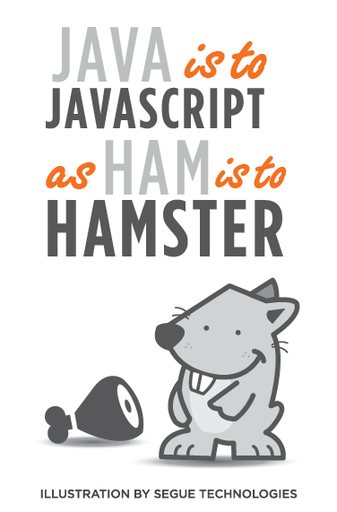

Un Poco de Historia


Problematicas - Principios Años 90
- Incrmento del contenido
- Webs más complejas (Formularios)
- Conexiones muy lentas
Solucion - Lenguage Client Side
En 1993 Brendan Eich un programador de Netscape crea JavaScript, un lenguage de scripting creado para ser ejecutado en el browser.
y Miscrosoft?
- Miscrosoft crea JScript, su "propio" lenguage client side para su browser Internet Explorer
- Netscape decide normalizar el lenguage a traves de ECMA
- Se crea la especificacion ECMAScript
ECMAScript
- Estandarizacion y especificacion para un lenguage de script multiplataforma e independiente.
- Version 1: 1997
- Version 5: 2009 (Actual)
- Version 6: Se espera para mediados de 2015
Que es JavaScript?
El Lenguage del Browser?
- Antiguamente era el lenguage del browser, hoy podemos encontrarlo en en el servidor y hasta en Base de Datos.
- Es un lenguage de script, interpretado y multiplataforma
- Nos enfocaremos en Client Side JavaScript
Client Side JavaScript
Se ejecuta e intrepreta en el browser.
Nos proporciona objetos para controlar e interactuar con el browser y con el DOM.
Nos permite agregar dinamismo e interactuar con nuestros sitios o aplicaciones web.
Que NO es JavaScript?
NO es:
- JAVA
- Flash
- jQuery
- AJAX
Caracteristicas
- Liviano
- Interpretado (NO se compila)
- Orientado a Objetos (No use clases, usa protitpos)
- Multiplataforma
- Tipado Dinamico
- Sinxtaxis simple, similar a JAVA, C, C#
Para que sirve?
- Interactuar con el DOM, modificar y manejar HTML y CSS
- Interceptar y maniuplar eventos de usuario y del browser
- Cambiar contenido (Sin necesidad de refresh)
- Manipular cookies y almacenar informacion en el browser
- Efectos, transiciones, animaciones
- Validar formularios
- Peticiones AJAX
- Aplicaciones Web Mediana y Altamente Complejas (SPA)
- Integrar APIS de Terceros (Facebook, Twitter, GitHub)
- Y muho mas...